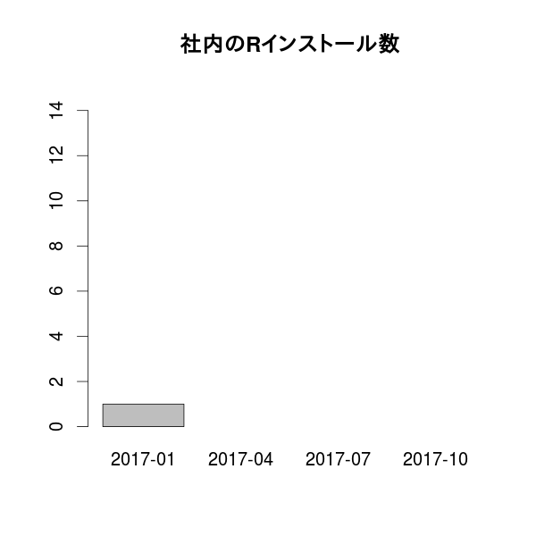
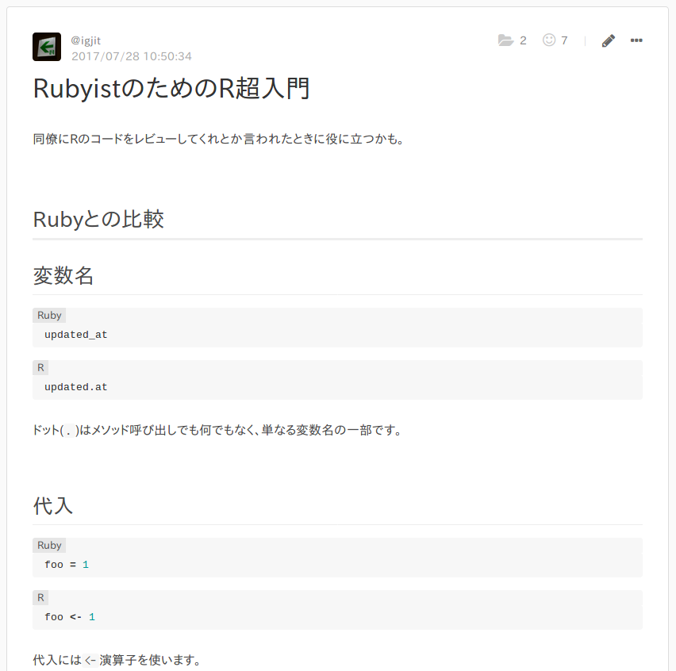
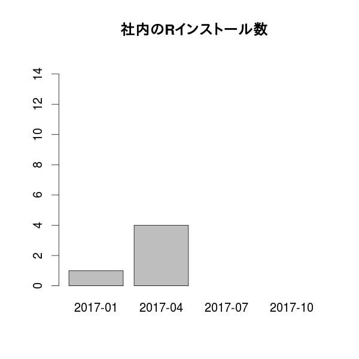
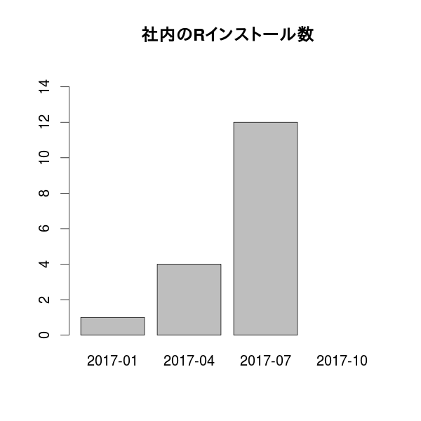
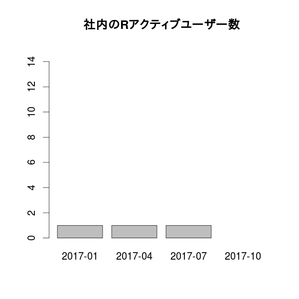
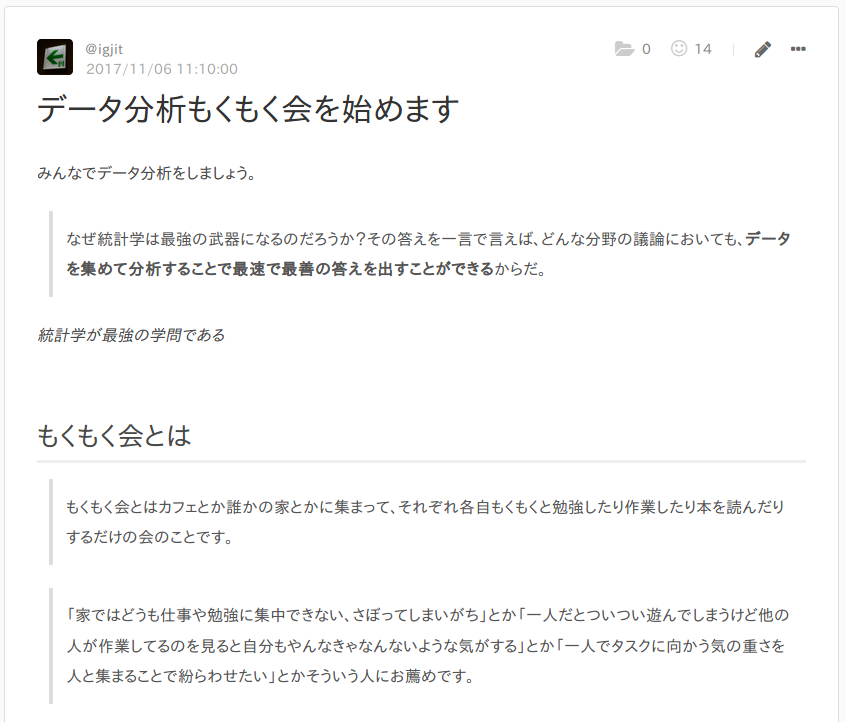
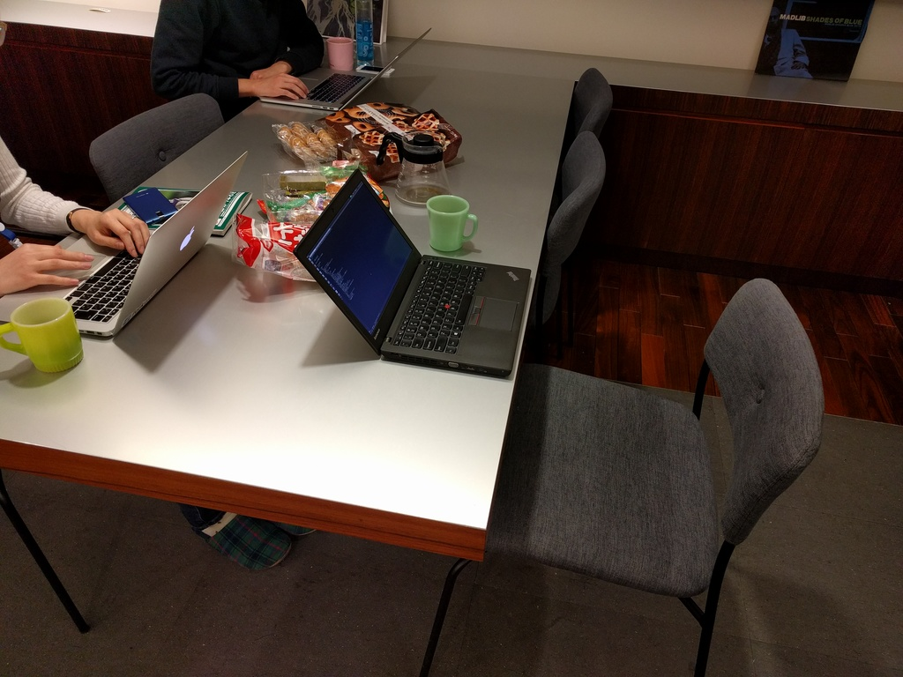
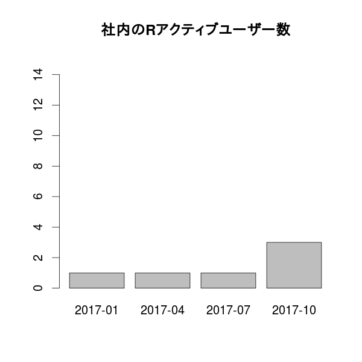

社内のRユーザーを増やすためにやったこと
私の仕事
Webアプリケーションエンジニア
Webサービス作ってます
仕事で使う言語
Ruby
ビジネスサイドが使う分析ツール
Google
スプレッドシート
社内のRユーザー
私だけ

趣味で
第39回 TokyoR
社内のRユーザーを増やすためにやったこと
1. 自社サービスでRを使う
自社サービスにレコメンデーションを実装したい
10章 k近傍法：推薦システム

in R
Rubyから雑にRを呼び出す
Ruby
# rubyの子プロセスとしてRscriptを呼び出す
result = `Rscript foo.R data.csv`
raise 'Rscript failed' if $CHILD_STATUS != 0
# Rscriptで標準出力に吐いた結果をparseする
CSV.parse(result, headers: true)R
Rのコードを書いたけど
マージには最低2人のコードレビューが必要
同僚にRのコードをレビューをしてもらうために

周りのエンジニアをRユーザーにした

非エンジニアもRユーザーにしたい
2. 社内勉強会を開く

in R
マンガでわかる統計学 in R
非エンジニアもRを使い始めた
- デザイナー
- ライター
- セールス
- カスタマーサクセス
- コーポレートデザイン

でもアクティブユーザーは

私だけ
みんながRを使う機会を作ろう
3. もくもく会を開く

週1回定時後に集まって

各自好きなことやってます
- Rによるやさしい統計学読む
- みどり本読む
- Kaggleのチュートリアルやる

今後も地道にユーザーを増やしていきます。
ご意見ください。